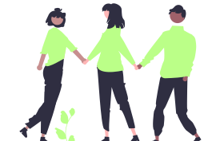
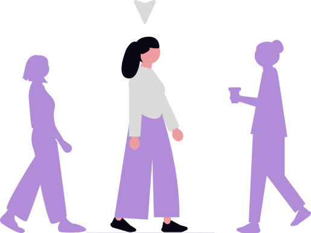

Explore causas
Filtre por área de interesse, localização ou modalidade e descubra projetos que combinam com o seu perfil.
Conecte-se com quem faz
Entre em contato direto com ONGs, tire dúvidas e candidate-se às vagas com apenas alguns cliques.
Acompanhe seu impacto
Registre sua jornada, acumule experiências e veja em números o quanto você está transformando vidas.

Para ONGs e projetos sociais
Alcance voluntários motivados e alinhados à sua missão, sem burocracia.
- → Publique vagas e ações em minutos
- → Gerencie candidatos em um só lugar
- → Amplie seu alcance e visibilidade
Para quem quer fazer a diferença
Doe seu tempo e talento para causas que importam e cresça junto com elas.
- → Vagas filtradas por seus interesses
- → Desenvolva habilidades reais
- → Construa um histórico de impacto


Rápido e sem complicação
Cadastre-se em minutos e já comece a explorar oportunidades.
Conexão direta e transparente
Fale diretamente com as ONGs, sem intermediários.
Impacto social comprovado
Cada ação sua é registrada e contribui para uma mudança real.
Oportunidades para todo perfil
De ações pontuais a projetos contínuos, presenciais ou remotos.
Pequenas ações geram grandes transformações.
Junte-se a milhares de pessoas que já estão fazendo a diferença. Seu próximo passo começa aqui.